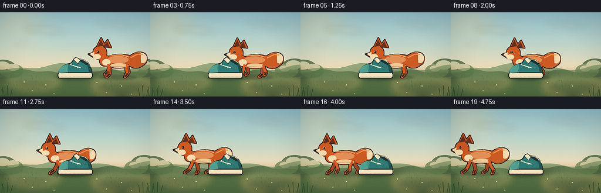
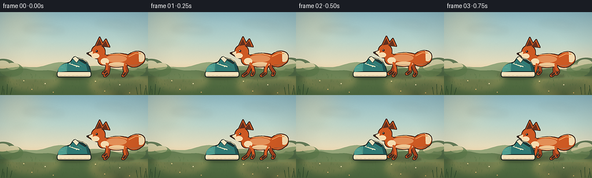
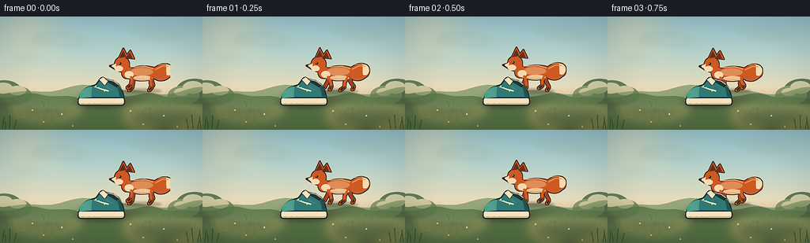
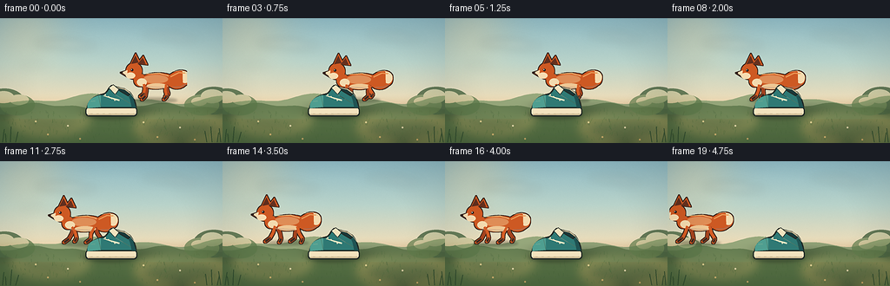

CODING AGENTS AS PIXEL WORLD MODELS
traex/DeepSeek-V4.1-Flash · dynamic_spatial_relationship_0029
点击播放 · 原生 RGB 像素
逐轮保存的候选
回放视频、检查图与代码变化。
每份候选均可单独播放。实际图片检查记录在下方工具轨迹中。
候选 01播放与检查图
点击播放 · 原生 RGB 像素


展开代码变化
--- 上一保存版本
+++ 本次保存版本
@@ -0,0 +1,473 @@
+#!/usr/bin/env python3
+"""Render a short, side-view fox-and-shoe spatial relationship animation."""
+
+from __future__ import annotations
+
+import json
+import math
+from pathlib import Path
+
+import cv2
+import numpy as np
+from PIL import Image, ImageDraw, ImageFilter
+
+import artifact_io
+
+
+ROOT = Path(__file__).resolve().parent
+SPEC = json.loads((ROOT / "task_spec.json").read_text())
+W, H = int(SPEC["width"]), int(SPEC["height"])
+N, FPS = int(SPEC["frames"]), float(SPEC["fps"])
+S = 4
+HW, HH = W * S, H * S
+
+
+def _p(value: float) -> int:
+ return int(round(value * S))
+
+
+def _box(box):
+ return tuple(_p(v) for v in box)
+
+
+def _points(points):
+ return [(_p(x), _p(y)) for x, y in points]
+
+
+def ellipse(draw, box, fill=None, outline=None, width=0):
+ draw.ellipse(_box(box), fill=fill, outline=outline, width=_p(width))
+
+
+def polygon(draw, points, fill=None, outline=None, width=0):
+ draw.polygon(_points(points), fill=fill, outline=outline, width=_p(width))
+
+
+def line(draw, points, fill, width=1, joint="curve"):
+ draw.line(
+ _points(points),
+ fill=fill,
+ width=max(1, _p(width)),
+ joint=joint,
+ )
+
+
+def rounded_rectangle(draw, box, radius, fill=None, outline=None, width=0):
+ draw.rounded_rectangle(
+ _box(box),
+ radius=_p(radius),
+ fill=fill,
+ outline=outline,
+ width=_p(width),
+ )
+
+
+def cubic(p0, p1, p2, p3, count=32):
+ points = []
+ for i in range(count):
+ t = i / (count - 1)
+ u = 1.0 - t
+ x = u**3 * p0[0] + 3 * u**2 * t * p1[0] + 3 * u * t**2 * p2[0] + t**3 * p3[0]
+ y = u**3 * p0[1] + 3 * u**2 * t * p1[1] + 3 * u * t**2 * p2[1] + t**3 * p3[1]
+ points.append((x, y))
+ return points
+
+
+def alpha_composite(base, overlay):
+ base.alpha_composite(overlay)
+ return base
+
+
+def make_background() -> Image.Image:
+ rng = np.random.default_rng(29)
+ yy, xx = np.mgrid[0:HH, 0:HW].astype(np.float32)
+ yn = yy / HH
+ xn = xx / HW
+
+ sky_stops = np.array([0.0, 0.35, 0.62, 0.76])
+ sky_colors = np.array(
+ [
+ [142, 185, 195],
+ [185, 211, 202],
+ [231, 220, 188],
+ [244, 208, 162],
+ ],
+ dtype=np.float32,
+ )
+ ground_stops = np.array([0.72, 1.0])
+ ground_colors = np.array([[122, 137, 86], [61, 83, 53]], dtype=np.float32)
+
+ sky = np.empty((HH, HW, 3), dtype=np.float32)
+ for channel in range(3):
+ sky[..., channel] = np.interp(yn, sky_stops, sky_colors[:, channel])
+ ground = np.empty_like(sky)
+ for channel in range(3):
+ ground[..., channel] = np.interp(yn, ground_stops, ground_colors[:, channel])
+
+ ground_mask = np.clip((yn - 0.705) / 0.025, 0, 1)[..., None]
+ image = sky * (1 - ground_mask) + ground * ground_mask
+
+ # Soft low sun at upper left and warm haze at the horizon.
+ sun_dist = np.sqrt((xx - 30 * S) ** 2 + (yy - 16 * S) ** 2)
+ glow = np.exp(-(sun_dist / (46 * S)) ** 2) * 0.30
+ horizon_glow = np.exp(-((yn - 0.71) / 0.075) ** 2) * 0.12
+ image += (np.array([255, 224, 163], dtype=np.float32) - image) * (
+ glow + horizon_glow
+ )[..., None]
+
+ texture = rng.normal(0, 2.0, (HH, HW, 1)).astype(np.float32)
+ image = np.clip(image + texture, 0, 255).astype(np.uint8)
+ base = Image.fromarray(image, "RGB").convert("RGBA")
+
+ # Thin, blurred clouds keep the background calm behind the two subjects.
+ cloud = Image.new("RGBA", (HW, HH), (0, 0, 0, 0))
+ cd = ImageDraw.Draw(cloud)
+ for cx, cy, ww, hh, opacity in [
+ (68, 29, 56, 8, 42),
+ (90, 32, 43, 6, 36),
+ (188, 20, 48, 7, 28),
+ (213, 24, 31, 5, 24),
+ (39, 54, 34, 5, 24),
+ ]:
+ ellipse(cd, (cx - ww / 2, cy - hh / 2, cx + ww / 2, cy + hh / 2), (255, 248, 224, opacity))
+ cloud = cloud.filter(ImageFilter.GaussianBlur(5 * S))
+ base = alpha_composite(base, cloud)
+
+ # Layered hills, with enough contrast to read as depth at 256 px wide.
+ far = Image.new("RGBA", (HW, HH), (0, 0, 0, 0))
+ fd = ImageDraw.Draw(far)
+ far_points = []
+ for x in np.linspace(0, W, 80):
+ y = 93 + 4.2 * math.sin(x / 28.0 + 0.8) + 2.1 * math.sin(x / 11.5 + 2.0)
+ far_points.append((x, y))
+ far_points += [(W, 108), (0, 108)]
+ polygon(fd, far_points, (151, 168, 124, 255))
+ base = alpha_composite(base, far)
+
+ near_hill = Image.new("RGBA", (HW, HH), (0, 0, 0, 0))
+ nd = ImageDraw.Draw(near_hill)
+ near_points = []
+ for x in np.linspace(0, W, 80):
+ y = 101.5 + 2.8 * math.sin(x / 22.0 + 2.7) + 1.5 * math.sin(x / 8.0)
+ near_points.append((x, y))
+ near_points += [(W, 116), (0, 116)]
+ polygon(nd, near_points, (103, 128, 84, 255))
+ base = alpha_composite(base, near_hill)
+
+ # Meadow color wash and sun patches.
+ meadow = Image.new("RGBA", (HW, HH), (0, 0, 0, 0))
+ md = ImageDraw.Draw(meadow)
+ polygon(md, [(0, 108), (W, 105), (W, H), (0, H)], (79, 106, 64, 215))
+ md.ellipse(_box((15, 101, 100, 132)), fill=(208, 191, 112, 22))
+ md.ellipse(_box((158, 108, 257, 144)), fill=(232, 196, 110, 20))
+ meadow = meadow.filter(ImageFilter.GaussianBlur(7 * S))
+ base = alpha_composite(base, meadow)
+
+ detail = Image.new("RGBA", (HW, HH), (0, 0, 0, 0))
+ dd = ImageDraw.Draw(detail)
+
+ # Muted bushes at the edges frame the action without competing with it.
+ for cx, cy, rx, ry, color in [
+ (5, 96, 23, 15, (78, 106, 69, 210)),
+ (20, 100, 20, 12, (91, 120, 73, 180)),
+ (246, 95, 24, 16, (75, 101, 66, 210)),
+ (232, 100, 20, 12, (96, 124, 75, 175)),
+ ]:
+ ellipse(dd, (cx - rx, cy - ry, cx + rx, cy + ry), color)
+ for cx, cy, rx, ry in [
+ (4, 91, 12, 7),
+ (22, 94, 11, 6),
+ (244, 90, 13, 8),
+ (229, 96, 9, 5),
+ ]:
+ ellipse(dd, (cx - rx, cy - ry, cx + rx, cy + ry), (139, 155, 90, 65))
+
+ # Grass texture is deliberately low contrast.
+ for _ in range(245):
+ x = float(rng.uniform(2, W - 2))
+ y = float(rng.uniform(107, H - 1))
+ length = float(rng.uniform(1.3, 4.8))
+ lean = float(rng.uniform(-1.2, 1.2))
+ shade = int(rng.integers(0, 22))
+ color = (62 + shade, 92 + shade, 52 + shade // 2, 125)
+ line(dd, [(x, y), (x + lean, y - length)], color, width=0.45)
+
+ # A few tiny flowers and seed heads provide scale.
+ for x, y, color in [
+ (41, 119, (232, 213, 150, 210)),
+ (55, 134, (229, 188, 118, 190)),
+ (78, 124, (244, 229, 185, 200)),
+ (92, 139, (223, 176, 111, 175)),
+ (165, 120, (238, 219, 157, 200)),
+ (181, 137, (227, 186, 116, 185)),
+ (207, 126, (244, 228, 186, 190)),
+ (224, 140, (228, 179, 108, 165)),
+ ]:
+ line(dd, [(x, y + 3), (x, y)], (63, 94, 55, 150), width=0.45)
+ ellipse(dd, (x - 1.0, y - 1.0, x + 1.0, y + 1.0), color)
+
+ # Static shoe contact shadow.
+ shoe_shadow = Image.new("RGBA", (HW, HH), (0, 0, 0, 0))
+ sd = ImageDraw.Draw(shoe_shadow)
+ ellipse(sd, (96, 105, 158, 116), (39, 44, 30, 82))
+ shoe_shadow = shoe_shadow.filter(ImageFilter.GaussianBlur(1.7 * S))
+ detail = alpha_composite(detail, shoe_shadow)
+
+ return alpha_composite(base, detail).convert("RGB")
+
+
+def make_shoe() -> Image.Image:
+ layer = Image.new("RGBA", (HW, HH), (0, 0, 0, 0))
+ d = ImageDraw.Draw(layer)
+ outline = (33, 42, 38, 255)
+ teal = (47, 121, 116, 255)
+ teal_light = (79, 158, 144, 255)
+ teal_dark = (31, 83, 83, 255)
+ cream = (242, 226, 190, 255)
+ cream_shadow = (207, 188, 150, 255)
+ lace = (249, 234, 196, 255)
+
+ # Sole.
+ rounded_rectangle(d, (98.2, 102.3, 157.8, 113.2), 4.0, fill=outline)
+ rounded_rectangle(d, (99.5, 103.3, 156.6, 111.7), 3.1, fill=cream)
+ polygon(d, [(101, 110.2), (155, 109.8), (155, 111.6), (101, 111.9)], cream_shadow)
+ for x in range(104, 155, 7):
+ line(d, [(x, 109.9), (x + 2.5, 110.0)], (186, 166, 128, 210), width=0.35)
+
+ # Canvas upper, with a slightly raised heel and rounded toe.
+ upper = (
+ cubic((99.6, 103.7), (100.5, 94.0), (108.0, 89.0), (118.8, 86.6), 22)
+ + cubic((118.8, 86.6), (123.1, 85.4), (124.0, 79.0), (128.3, 76.8), 15)[1:]
+ + cubic((128.3, 76.8), (135.5, 79.0), (143.0, 80.7), (149.4, 84.7), 15)[1:]
+ + cubic((149.4, 84.7), (154.1, 90.0), (157.0, 98.0), (157.2, 104.1), 15)[1:]
+ + [(99.6, 103.7)]
+ )
+ polygon(d, upper, teal, outline, 1.8)
+
+ # Toe cap and heel reinforcement.
+ toe = cubic((100.4, 101.7), (100.7, 94.8), (106.7, 90.2), (115.7, 88.4), 18)
+ toe += [(115.8, 102.6), (100.4, 103.7)]
+ polygon(d, toe, teal_light)
+ polygon(
+ d,
+ [(146.0, 85.3), (153.1, 92.0), (156.2, 103.0), (151.6, 103.1), (149.5, 93.5)],
+ teal_dark,
+ )
+
+ # Ankle opening, padded collar, and tongue.
+ polygon(
+ d,
+ [(130.0, 78.6), (143.3, 80.8), (151.1, 86.2), (147.2, 90.1), (138.0, 84.5)],
+ (27, 57, 57, 255),
+ outline,
+ 1.2,
+ )
+ line(d, [(132.0, 79.2), (143.8, 82.1), (149.4, 86.2)], cream_shadow, width=1.25)
+ polygon(d, [(124.4, 80.1), (130.2, 76.3), (137.2, 82.0), (132.5, 88.2)], cream, outline, 0.8)
+
+ # Laces and eyelets.
+ for offset in (0, 3.0, 6.0):
+ line(
+ d,
+ [(119.0 + offset, 89.2 + offset * 0.34), (137.0, 94.0 + offset * 0.16)],
+ lace,
+ width=1.0,
+ )
+ for x, y in [(121.0, 88.2), (124.7, 90.4), (128.4, 92.5), (132.0, 94.5)]:
+ ellipse(d, (x - 0.75, y - 0.75, x + 0.75, y + 0.75), cream)
+
+ # Subtle canvas seams.
+ line(d, [(112.6, 86.7), (115.8, 101.8)], (36, 94, 91, 160), width=0.55)
+ line(d, [(132.0, 87.8), (150.5, 98.8)], (28, 79, 78, 130), width=0.55)
+ line(d, [(104.5, 95.8), (109.2, 95.2)], (196, 225, 199, 125), width=0.45)
+ line(d, [(149.5, 86.0), (154.5, 93.0)], (117, 188, 165, 95), width=0.45)
+
+ return layer
+
+
+def _leg_points(cx: float, body_y: float, hip_x: float, phase: float, front: bool):
+ hip_y = body_y + (5.4 if front else 6.1)
+ stride = 9.2 * math.sin(phase)
+ lift = 4.2 * max(0.0, math.cos(phase))
+ foot_x = cx + hip_x + stride - (2.0 if front else 0.0)
+ foot_y = 109.8 - lift
+ dx = foot_x - (cx + hip_x)
+ dy = foot_y - hip_y
+ bend = 2.0 if front else -1.0
+ knee = (cx + hip_x + 0.42 * dx + bend, hip_y + 0.46 * dy - 1.0)
+ hock = (cx + hip_x + 0.76 * dx + 1.3, hip_y + 0.78 * dy + 0.4)
+ toe = (foot_x - 3.0, foot_y + 0.5)
+ return [(cx + hip_x, hip_y), knee, hock, toe]
+
+
+def make_fox(cx: float, phase: float) -> Image.Image:
+ bob = 1.15 * math.sin(2 * phase + 0.45)
+ y = 82.2 + bob
+ layer = Image.new("RGBA", (HW, HH), (0, 0, 0, 0))
+
+ front_near = _leg_points(cx, y, -17.5, phase, True)
+ front_far = _leg_points(cx, y, -15.0, phase + math.pi, True)
+ hind_near = _leg_points(cx, y, 14.5, phase + math.pi, False)
+ hind_far = _leg_points(cx, y, 16.4, phase, False)
+
+ # Tail: a broad, tapered curve held high behind the body.
+ tail = (
+ cubic((cx + 17.0, y - 5.0), (cx + 29.0, y - 17.5), (cx + 43.5, y - 17.0), (cx + 48.2, y - 7.8), 25)
+ + cubic((cx + 48.2, y - 7.8), (cx + 50.2, y - 1.0), (cx + 47.0, y + 5.5), (cx + 42.5, y + 7.0), 12)[1:]
+ + cubic((cx + 42.5, y + 7.0), (cx + 34.2, y + 15.0), (cx + 23.2, y + 13.5), (cx + 16.5, y + 5.8), 18)[1:]
+ + [(cx + 17.0, y - 5.0)]
+ )
+
+ body = (
+ cubic((cx - 24.0, y - 1.0), (cx - 16.0, y - 12.0), (cx + 8.0, y - 13.4), (cx + 23.2, y - 7.0), 24)
+ + cubic((cx + 23.2, y - 7.0), (cx + 25.7, y + 1.0), (cx + 21.0, y + 8.6), (cx + 16.0, y + 10.0), 12)[1:]
+ + cubic((cx + 16.0, y + 10.0), (cx + 2.0, y + 14.2), (cx - 15.0, y + 13.4), (cx - 23.0, y + 4.0), 18)[1:]
+ + [(cx - 24.0, y - 1.0)]
+ )
+
+ mask = Image.new("L", (HW, HH), 0)
+ md = ImageDraw.Draw(mask)
+ polygon(md, tail, 255)
+ polygon(md, body, 255)
+ ellipse(md, (cx - 31.8, y - 9.5, cx - 14.0, y + 8.8), 255)
+ ellipse(md, (cx - 43.0, y - 25.0, cx - 20.0, y - 2.0), 255)
+ polygon(md, [(cx - 39.0, y - 15.0), (cx - 51.0, y - 11.3), (cx - 39.8, y - 4.4)], 255)
+
+ # Ears and leg silhouettes are included in the single fox outline.
+ polygon(md, [(cx - 37.0, y - 23.0), (cx - 29.3, y - 39.3), (cx - 22.2, y - 25.0)], 255)
+ polygon(md, [(cx - 27.0, y - 24.2), (cx - 18.2, y - 35.7), (cx - 12.0, y - 22.4)], 255)
+ for leg in (front_far, hind_far, front_near, hind_near):
+ line(md, leg, 255, width=4.4)
+ ellipse(md, (leg[-1][0] - 2.2, leg[-1][1] - 1.8, leg[-1][0] + 2.0, leg[-1][1] + 1.8), 255)
+
+ outline_mask = mask.filter(ImageFilter.MaxFilter(2 * S + 1))
+ outline_layer = Image.new("RGBA", (HW, HH), (55, 35, 27, 0))
+ outline_layer.putalpha(outline_mask)
+ layer = alpha_composite(layer, outline_layer)
+
+ orange = Image.new("RGBA", (HW, HH), (205, 89, 35, 255))
+ orange.putalpha(mask)
+ layer = alpha_composite(layer, orange)
+ d = ImageDraw.Draw(layer)
+
+ # Far legs sit in shadow and are partially covered by the torso.
+ for leg in (front_far, hind_far):
+ line(d, leg[:3], (161, 65, 31, 255), width=3.5)
+ line(d, leg[2:], (62, 42, 34, 255), width=3.0)
+
+ # Warm tail shading and cream tip.
+ tail_tip = (
+ cubic((cx + 38.2, y - 13.6), (cx + 47.0, y - 13.5), (cx + 49.5, y - 7.0), (cx + 48.0, y - 1.5), 14)
+ + cubic((cx + 48.0, y - 1.5), (cx + 46.3, y + 4.0), (cx + 42.2, y + 5.2), (cx + 38.7, y + 3.0), 8)[1:]
+ + [(cx + 38.2, y - 13.6)]
+ )
+ polygon(d, tail_tip, (244, 218, 174, 255))
+ line(d, [(cx + 21.0, y - 5.3), (cx + 33.0, y - 11.2), (cx + 42.0, y - 10.4)], (241, 142, 67, 220), width=1.7)
+ line(d, [(cx + 24.0, y + 9.5), (cx + 36.0, y + 9.0), (cx + 43.0, y + 5.2)], (153, 58, 27, 175), width=1.4)
+
+ # Body light, belly, and chest.
+ ellipse(d, (cx - 18.0, y - 8.2, cx + 17.5, y + 4.5), (228, 111, 43, 180))
+ ellipse(d, (cx - 13.5, y + 4.3, cx + 17.0, y + 12.0), (239, 198, 146, 245))
+ ellipse(d, (cx - 27.5, y - 3.0, cx - 13.2, y + 8.2), (245, 218, 174, 250))
+ line(d, [(cx - 14.0, y - 9.4), (cx + 5.0, y - 10.0), (cx + 18.0, y - 6.8)], (247, 157, 76, 205), width=1.3)
+ line(d, [(cx - 20.0, y + 8.8), (cx + 11.0, y + 10.2)], (144, 54, 28, 105), width=1.0)
+
+ # Near legs are lighter, with dark lower socks.
+ for leg in (front_near, hind_near):
+ line(d, leg[:3], (211, 92, 37, 255), width=3.4)
+ line(d, leg[2:], (62, 42, 34, 255), width=3.0)
+ ellipse(d, (leg[2][0] - 1.6, leg[2][1] - 1.6, leg[2][0] + 1.6, leg[2][1] + 1.6), (105, 58, 38, 255))
+
+ # Face markings, eye, and nose.
+ ellipse(d, (cx - 43.2, y - 11.5, cx - 29.8, y - 2.5), (247, 219, 176, 255))
+ polygon(d, [(cx - 41.0, y - 15.0), (cx - 49.8, y - 11.5), (cx - 41.5, y - 5.0)], (247, 219, 176, 255))
+ ellipse(d, (cx - 51.2, y - 12.7, cx - 47.8, y - 9.9), (48, 34, 30, 255))
+ line(d, [(cx - 48.6, y - 10.4), (cx - 43.8, y - 7.1)], (70, 42, 30, 230), width=0.75)
+ ellipse(d, (cx - 36.3, y - 17.0, cx - 32.5, y - 13.3), (40, 29, 26, 255))
+ ellipse(d, (cx - 35.7, y - 16.3, cx - 34.4, y - 15.0), (255, 244, 217, 235))
+
+ polygon(d, [(cx - 35.7, y - 23.8), (cx - 29.5, y - 36.0), (cx - 25.0, y - 25.6)], (98, 47, 30, 255))
+ polygon(d, [(cx - 26.2, y - 24.0), (cx - 18.9, y - 32.8), (cx - 14.8, y - 23.2)], (102, 49, 31, 255))
+
+ # Small rim highlights pull the silhouette away from the green background.
+ line(d, [(cx - 19.0, y - 9.0), (cx + 5.0, y - 11.0), (cx + 18.0, y - 6.0)], (255, 182, 91, 110), width=0.8)
+ line(d, [(cx + 24.0, y - 13.0), (cx + 37.0, y - 14.5), (cx + 45.0, y - 9.5)], (255, 187, 100, 95), width=0.7)
+
+ return layer
+
+
+def fox_shadow(cx: float, phase: float) -> Image.Image:
+ layer = Image.new("RGBA", (HW, HH), (0, 0, 0, 0))
+ d = ImageDraw.Draw(layer)
+ wobble = 0.8 * math.sin(phase)
+ ellipse(d, (cx - 33, 107.6, cx + 31, 115.2 + wobble), (40, 45, 30, 76))
+ return layer.filter(ImageFilter.GaussianBlur(1.6 * S))
+
+
+def add_foreground(scene: Image.Image, frame_index: int) -> Image.Image:
+ layer = Image.new("RGBA", (HW, HH), (0, 0, 0, 0))
+ d = ImageDraw.Draw(layer)
+ # Only the bottom corners receive foreground blades, leaving the actors clear.
+ for x, height, lean in [
+ (3, 15, 2.0), (7, 10, -1.0), (12, 18, 1.0), (18, 12, 3.0),
+ (238, 13, -2.0), (244, 18, -1.0), (250, 11, 2.0), (254, 16, -2.0),
+ ]:
+ sway = 0.45 * math.sin(frame_index * 0.75 + x)
+ line(d, [(x, 143), (x + lean + sway, 143 - height)], (43, 71, 43, 205), width=1.05)
+ line(d, [(x + 2, 143), (x + lean * 0.5 + 3 + sway, 143 - height * 0.72)], (83, 111, 61, 155), width=0.6)
+ return alpha_composite(scene.convert("RGBA"), layer)
+
+
+def render_frames(background: Image.Image, shoe: Image.Image):
+ frames = []
+ start_x, end_x = 201.5, 50.5
+ for i in range(N):
+ t = i / (N - 1)
+ cx = start_x + (end_x - start_x) * t
+ phase = 2.0 * math.pi * (i / 5.0)
+ scene = background.copy().convert("RGBA")
+ scene = alpha_composite(scene, fox_shadow(cx, phase))
+ scene = alpha_composite(scene, make_fox(cx, phase))
+ scene = alpha_composite(scene, shoe)
+ scene = add_foreground(scene, i)
+
+ frame = scene.convert("RGB").resize((W, H), Image.Resampling.LANCZOS)
+
+ # A restrained vignette and sharpening preserve detail at the low output size.
+ arr = np.asarray(frame).astype(np.float32)
+ yy, xx = np.mgrid[0:H, 0:W].astype(np.float32)
+ radius = np.sqrt(((xx - W * 0.5) / (W * 0.58)) ** 2 + ((yy - H * 0.5) / (H * 0.65)) ** 2)
+ vignette = 1.0 - 0.075 * np.clip(radius - 0.58, 0, 1) / 0.42
+ arr *= vignette[..., None]
+ frame = Image.fromarray(np.clip(arr, 0, 255).astype(np.uint8), "RGB")
+ frame = frame.filter(ImageFilter.UnsharpMask(radius=0.55, percent=72, threshold=2))
+ frames.append(np.asarray(frame, dtype=np.uint8))
+ return np.stack(frames)
+
+
+def write_mp4(frames: np.ndarray) -> None:
+ path = ROOT / "preview.mp4"
+ writer = cv2.VideoWriter(
+ str(path),
+ cv2.VideoWriter_fourcc(*"mp4v"),
+ FPS,
+ (W, H),
+ )
+ if not writer.isOpened():
+ writer.release()
+ return
+ for frame in frames:
+ writer.write(cv2.cvtColor(frame, cv2.COLOR_RGB2BGR))
+ writer.release()
+
+
+def main() -> None:
+ background = make_background()
+ shoe = make_shoe()
+ frames = render_frames(background, shoe)
+ artifact_io.save(frames, ROOT)
+ write_mp4(frames)
+ print(f"rendered {len(frames)} frames at {W}x{H}, {FPS:g} fps")
+
+
+if __name__ == "__main__":
+ main()
候选 02播放与检查图
点击播放 · 原生 RGB 像素


展开代码变化
--- 上一保存版本
+++ 本次保存版本
@@ -395,6 +395,18 @@
return layer
+def scale_fox(layer: Image.Image, cx: float, scale: float = 0.80) -> Image.Image:
+ """Scale around the planted feet so the body still sits on the meadow."""
+ pivot_y = 109.8
+ inv = 1.0 / scale
+ return layer.transform(
+ (HW, HH),
+ Image.Transform.AFFINE,
+ (inv, 0.0, cx - cx * inv, 0.0, inv, pivot_y - pivot_y * inv),
+ resample=Image.Resampling.BICUBIC,
+ )
+
+
def fox_shadow(cx: float, phase: float) -> Image.Image:
layer = Image.new("RGBA", (HW, HH), (0, 0, 0, 0))
d = ImageDraw.Draw(layer)
@@ -419,14 +431,14 @@
def render_frames(background: Image.Image, shoe: Image.Image):
frames = []
- start_x, end_x = 201.5, 50.5
+ start_x, end_x = 211.0, 43.0
for i in range(N):
t = i / (N - 1)
cx = start_x + (end_x - start_x) * t
phase = 2.0 * math.pi * (i / 5.0)
scene = background.copy().convert("RGBA")
- scene = alpha_composite(scene, fox_shadow(cx, phase))
- scene = alpha_composite(scene, make_fox(cx, phase))
+ scene = alpha_composite(scene, scale_fox(fox_shadow(cx, phase), cx))
+ scene = alpha_composite(scene, scale_fox(make_fox(cx, phase), cx))
scene = alpha_composite(scene, shoe)
scene = add_foreground(scene, i)
候选 03播放与检查图
点击播放 · 原生 RGB 像素

展开代码变化
--- 上一保存版本
+++ 本次保存版本
@@ -398,11 +398,10 @@
def scale_fox(layer: Image.Image, cx: float, scale: float = 0.80) -> Image.Image:
"""Scale around the planted feet so the body still sits on the meadow."""
pivot_y = 109.8
- inv = 1.0 / scale
return layer.transform(
(HW, HH),
Image.Transform.AFFINE,
- (inv, 0.0, cx - cx * inv, 0.0, inv, pivot_y - pivot_y * inv),
+ (scale, 0.0, cx * (1.0 - scale), 0.0, scale, pivot_y * (1.0 - scale)),
resample=Image.Resampling.BICUBIC,
)
候选 04播放与检查图
候选 05播放与检查图
点击播放 · 原生 RGB 像素
展开代码变化
--- 上一保存版本
+++ 本次保存版本
@@ -397,11 +397,20 @@
def scale_fox(layer: Image.Image, cx: float, scale: float = 0.80) -> Image.Image:
"""Scale around the planted feet so the body still sits on the meadow."""
- pivot_y = 109.8
+ center_x = cx * S
+ pivot_y = 109.8 * S
+ inv = 1.0 / scale
return layer.transform(
(HW, HH),
Image.Transform.AFFINE,
- (scale, 0.0, cx * (1.0 - scale), 0.0, scale, pivot_y * (1.0 - scale)),
+ (
+ inv,
+ 0.0,
+ center_x * (1.0 - inv),
+ 0.0,
+ inv,
+ pivot_y * (1.0 - inv),
+ ),
resample=Image.Resampling.BICUBIC,
)
@@ -430,7 +439,7 @@
def render_frames(background: Image.Image, shoe: Image.Image):
frames = []
- start_x, end_x = 211.0, 43.0
+ start_x, end_x = 204.0, 55.0
for i in range(N):
t = i / (N - 1)
cx = start_x + (end_x - start_x) * t
候选 06播放与检查图
可观测工具轨迹
实际执行的命令与返回图片。
命令 1exit 0
/bin/bash -c "pwd && rg --files -g 'prompt.txt' -g 'GENERATION_RULES.md' -g 'task_spec.json' -g '"'!node_modules'"' -g '"'!vendor'"'"
命令 2exit 0
/bin/bash -c "sed -n '1,240p' GENERATION_RULES.md"
命令 3exit 0
/bin/bash -c "cat task_spec.json && printf '\\n--- PROMPT ---\\n' && cat prompt.txt"
命令 4exit 0
/bin/bash -c "ls -la && find . -maxdepth 2 -type f -not -path './.git/*' -printf '%p %s bytes\\n' | sort | head -200"
命令 5exit 0
/bin/bash -c "sed -n '1,260p' artifact_io.py"
命令 6exit 0
/bin/bash -c "sed -n '1,260p' player_template.html"
命令 7exit 0
/bin/bash -c "python - <<'PY' import importlib.util for m in ['numpy','PIL','cv2','imageio','matplotlib']: print(m, bool(importlib.util.find_spec(m))) PY ffmpeg -version | head -2"
命令 8exit 0
/bin/bash -c 'python generate.py'
命令 9exit 0
/bin/bash -c "python - <<'PY'
from PIL import Image
im=Image.open('inspection.png')
print(im.size)
# Enlarge the contact sheet for visual inspection without modifying artifacts.
im.resize((im.width*2, im.height*2), Image.Resampling.NEAREST).save('.tmp/inspection_2x.png')
PY"命令 10exit 0
/bin/bash -c "python - <<'PY'
from PIL import Image
for i in [0,4,8,9,10,11,12,19]:
im=Image.open(f'frames/{i:02d}.png')
im.resize((1024,576), Image.Resampling.LANCZOS).save(f'.tmp/frame_{i:02d}_4x.png')
PY"命令 11exit 0
/bin/bash -c 'python generate.py'
命令 12exit 0
/bin/bash -c 'command -v chafa || true; command -v viu || true; command -v jp2 || true; command -v img2txt || true; file frames/00.png frames/19.png preview.mp4; ls -lh frames/00.png frames/19.png pixels.npz preview.mp4 index.html'
命令 13exit 0
/bin/bash -c "python - <<'PY'
from PIL import Image
import numpy as np
for i in [0,1,4,7,8,9,10,11,12,15,19]:
a=np.array(Image.open(f'frames/{i:02d}.png')).astype(int)
# orange/cream fox; exclude brown ground, shoes
orange=(a[:,:,0]>145)&(a[:,:,0]>a[:,:,1]*1.35)&(a[:,:,0]>a[:,:,2]*1.5)&(a[:,:,1]>35)
teal=(a[:,:,1]>70)&(a[:,:,2]>65)&(a[:,:,1]>a[:,:,0]*1.25)&(a[:,:,2]>a[:,:,0]*1.18)
def bb(m):
ys,xs=np.where(m)
return None if len(xs)==0 else (xs.min(),ys.min(),xs.max(),ys.max(),len(xs))
print(i,'fox',bb(orange),'shoe',bb(teal))
PY"命令 14exit 0
/bin/bash -c "python - <<'PY'
from PIL import Image
import numpy as np
for idx in [0,10,19]:
a=np.array(Image.open(f'frames/{idx:02d}.png'))
# 2x2 average to a 128x72 character map.
b=a[:144,:256].reshape(72,2,128,2,3).mean((1,3)).astype(int)
out=[]
for row in b:
s=''
for r,g,bl in row:
if r>150 and r>g*1.35 and r>bl*1.5: c='O'
elif g>60 and bl>55 and g>r*1.22 and bl>r*1.12: c='T'
elif r>210 and g>190 and bl>140: c='C'
elif g>r*1.03 and g>bl*1.12: c='.'
elif r>g*1.1 and g>bl*1.05: c='g'
else: c=' '
s+=c
out.append(s.rstrip())
print('\\nFRAME',idx)
print('\\n'.join(out))
PY"命令 15exit 0
/bin/bash -c 'python generate.py'
命令 16exit 0
/bin/bash -c "python - <<'PY'
from PIL import Image
import numpy as np
for i in [0,1,4,7,8,9,10,11,12,15,19]:
a=np.array(Image.open(f'frames/{i:02d}.png')).astype(int)
orange=(a[:,:,0]>145)&(a[:,:,0]>a[:,:,1]*1.35)&(a[:,:,0]>a[:,:,2]*1.5)&(a[:,:,1]>35)
# shoe detection limited to shoe's intended band, avoiding sky.
teal=(a[:,:,1]>70)&(a[:,:,2]>65)&(a[:,:,1]>a[:,:,0]*1.25)&(a[:,:,2]>a[:,:,0]*1.18)
teal[:70]=False
def bb(m):
ys,xs=np.where(m)
return None if len(xs)==0 else (int(xs.min()),int(ys.min()),int(xs.max()),int(ys.max()),len(xs))
print(i,'fox',bb(orange),'shoe',bb(teal))
PY"命令 17exit 1
/bin/bash -c "python - <<'PY'
from PIL import Image
import numpy as np
for i in [0,10,19]:
a=np.array(Image.open(f'frames/{i:02d}.png')).astype(int)
print('\\nFRAME',i)
# crop only actor band, 2x2 chars for compact silhouette inspection
b=a[35:120,0:256].reshape(43,2,128,2,3).mean((1,3)).astype(int)
for row in b:
s=''
for r,g,bl in row:
if r>145 and r>g*1.35 and r>bl*1.5 and g>35: c='@'
elif g>68 and bl>62 and g>r*1.22 and bl>r*1.12: c='S'
elif r>205 and g>180 and bl>135: c='o'
elif g>r*1.02 and g>bl*1.10: c='.'
elif r>g*1.08 and g>bl*1.05: c=','
else: c=' '
s+=c
print(s.rstrip())
PY"命令 18exit 0
/bin/bash -c "python - <<'PY'
from PIL import Image
import numpy as np
for i in [0,10,19]:
a=np.array(Image.open(f'frames/{i:02d}.png')).astype(int)
print('\\nFRAME',i)
b=a[35:119,:].reshape(42,2,128,2,3).mean((1,3)).astype(int)
for row in b:
s=''
for r,g,bl in row:
if r>145 and r>g*1.35 and r>bl*1.5 and g>35: c='@'
elif g>68 and bl>62 and g>r*1.22 and bl>r*1.12: c='S'
elif r>205 and g>180 and bl>135: c='o'
elif g>r*1.02 and g>bl*1.10: c='.'
elif r>g*1.08 and g>bl*1.05: c=','
else: c=' '
s+=c
print(s.rstrip())
PY"命令 19exit 0
/bin/bash -c "python - <<'PY'
from PIL import Image
import numpy as np
# Measure actual non-background extents using known static background and object layer colors.
bg=np.array(Image.open('frames/00.png'))
# Detect fox using orange plus its cream/dark details within a connected component grown from orange.
for i in [0,10,19]:
a=np.array(Image.open(f'frames/{i:02d}.png')).astype(np.int16)
r,g,b=a[...,0],a[...,1],a[...,2]
orange=(r>135)&(r>g*1.28)&(r>b*1.35)&(g>30)&(g<180)
# Focus around expected actor region; background horizon can be orange.
orange[:35]=False; orange[120:]=False
# remove left edge decorative warm foreground for frame 19 by color-only extents still informative
ys,xs=np.where(orange)
print(i, (xs.min(),ys.min(),xs.max(),ys.max()), len(xs))
# detect shoe strongly via teal band
shoe=(g>65)&(b>55)&(g>r*1.30)&(b>r*1.20)
shoe[:75]=False; shoe[110:]=False
ys,xs=np.where(shoe)
print(' shoe', (xs.min(),ys.min(),xs.max(),ys.max()), len(xs))
PY"命令 20exit 0
/bin/bash -c 'python generate.py'
命令 21exit 0
/bin/bash -c "python - <<'PY'
from PIL import Image
import numpy as np
shoe_box=None
for i in [0,1,4,7,8,9,10,11,12,15,19]:
a=np.array(Image.open(f'frames/{i:02d}.png')).astype(np.int16)
r,g,b=a[...,0],a[...,1],a[...,2]
orange=(r>135)&(r>g*1.28)&(r>b*1.35)&(g>30)&(g<180)
orange[:35]=False; orange[120:]=False
# Ignore the warm decorative lower-left flowers where possible.
ys,xs=np.where(orange)
fox=(int(xs.min()),int(ys.min()),int(xs.max()),int(ys.max()),len(xs))
shoe=(g>65)&(b>55)&(g>r*1.30)&(b>r*1.20)
shoe[:75]=False; shoe[110:]=False
ys,xs=np.where(shoe)
sb=(int(xs.min()),int(ys.min()),int(xs.max()),int(ys.max()),len(xs))
print(f'{i:02d} fox={fox} shoe={sb}')
PY"命令 22exit 0
/bin/bash -c "python - <<'PY'
from PIL import Image
import numpy as np
from pathlib import Path
import json
frames=[np.array(Image.open(p)) for p in sorted(Path('frames').glob('*.png'))]
print('frames',len(frames),'shape',frames[0].shape,'dtype',frames[0].dtype)
print('unique adjacent changes',[int(np.count_nonzero(frames[i]"'!=frames[i-1])) for i in range(1,len(frames))])
print('"'first mean',frames[0].mean((0,1)).round(1),'last mean',frames[-1].mean((0,1)).round(1))
npz=np.load('pixels.npz')['pixels']
print('pixels.npz',npz.shape,npz.dtype,'range',int(npz.min()),int(npz.max()))
html=Path('index.html').read_text()
print('player',len(html),'ready marker', 'window.__pixelReady' in html,'payload', '__DATA__' not in html)
print('mp4 bytes',Path('preview.mp4').stat().st_size)
PY
python -m py_compile generate.py
git status --short 2>/dev/null || true"命令 23exit 0
/bin/bash -c "python - <<'PY'
from PIL import Image
import numpy as np
import generate as g
for name,im in [('fox_start',g.scale_fox(g.make_fox(204,0),204)),('fox_mid',g.scale_fox(g.make_fox(129.5,2*np.pi),129.5)),('shoe',g.make_shoe())]:
im=im.resize((g.W,g.H),Image.Resampling.LANCZOS)
im.save(f'.tmp/{name}.png')
a=np.array(im)[:,:,3]
ys,xs=np.where(a>40)
print(name,'alpha bbox',(int(xs.min()),int(ys.min()),int(xs.max()),int(ys.max())),'pixels',len(xs))
PY"保存候选 6 份；完成命令 23 次；可验证图片返回 0 张。原始 API 响应与完整日志保留在本地。